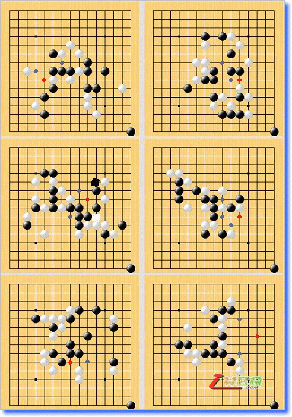
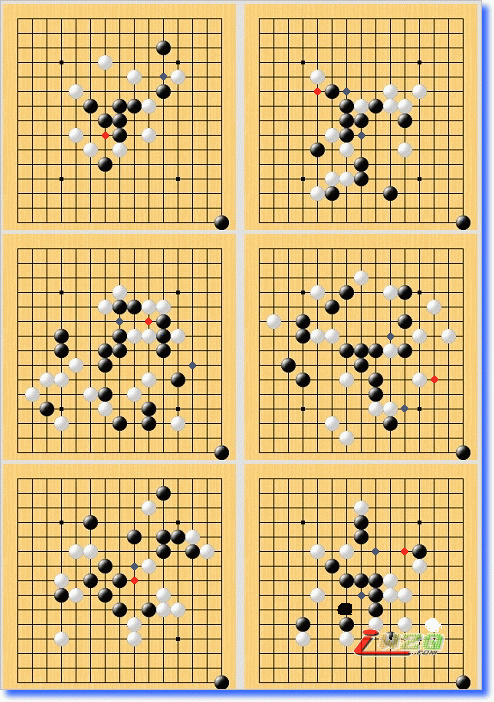
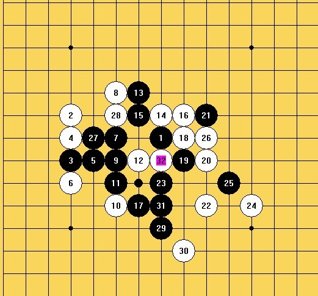
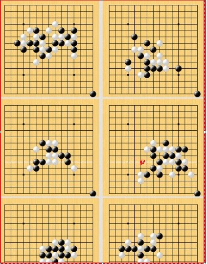

《天狗道场》屏蔽整理版答案
#1 《天狗道场》屏蔽整理版答案 作者：屏蔽 发表时间：2008-9-25 0:10:39
啥都不说了，大家喜欢的话就下载了看吧。我整理的题目在《【推荐】日本连珠天狗道场【屏蔽整理版】》（ShowPost.asp?ThreadID=3984）。
第一次做拆分的压缩包，但愿能够成功……【有志注：全文件下载见后】
 《天狗道场》屏蔽整理版答案.part01.rar
《天狗道场》屏蔽整理版答案.part01.rar相关题目见：【推荐】日本连珠天狗道场【屏蔽整理版】
所有的题目我基本上都是目算或手动进行一些简单的操作，这套答案应该还是有比较高的准确性。有任何问题还请大家帮忙提出。
《三手胜》
已经找到了《三手胜》的电子书，书上的讲解（包括正解和错例）已经非常详细而周到，我也就不在这里班门弄斧了，在此感谢坂田吾郎老先生……
VCF练习
第一题的正确答案比我的解答麻烦，我想原题目作者可能是漏看了。第九题有问题（直接活四？），我试图参照原题目进行修正，但没有成功，事实上，似乎原来的题目也有问题。当我终于把它整得像一道VCF练习的时候，我发现，VCF没有了……所以答案中没有第九题。第十一题和十二题则异常简单，我不知道是怎么回事，有意思的是这两道题的冲四点都很多，似乎不是为了练习计算深度而是为了练习计算广度而设计的。在Renlib右侧的评论中，加注“@”的位置就是题目原型，摆题的时候请从左起自上至下依次轮流摆出所有棋子。
连攻习题
我给出了所有较强分支的答案，其他分支应该可以自行解决了，当然有些题目的解法可能并不是最简单的。其中第61题特别感谢iwzq上yoda的指导！在Renlib右侧的评论中，加注“@”的位置就是题目原型，摆题的时候请从左起自上至下依次轮流摆出所有棋子，因此打开Renlib的时候建议不要转换到棋子的标准位置。这部分题目关键还是目算~~~因为有很多出人意料的手段或深刻而勇敢的想法，摆出来的时候总会有“啊，原来这么简单/无聊”的想法之类的……那就没有意义了。<
#2 Re:《天狗道场》屏蔽整理版答案 作者：越狱行辕 发表时间：2008-9-25 0:19:10
感谢啊#3 Re:《天狗道场》屏蔽整理版答案 作者：屏蔽 发表时间：2008-9-25 0:22:03
沙发自己坐……试了一下应该可以下载。
#4 Re:《天狗道场》屏蔽整理版答案 作者：屏蔽 发表时间：2008-9-25 0:26:02
我靠的咧~都这点儿了沙发还能被抢~哈哈哈~#5 Re:《天狗道场》屏蔽整理版答案 作者：红豆 发表时间：2008-9-25 1:20:10
马扎吧。。。。。。。。#6 Re:《天狗道场》屏蔽整理版答案 作者：潇洒 发表时间：2008-9-25 10:31:54
屏蔽LS辛苦了~#7 Re:《天狗道场》屏蔽整理版答案 作者：茗弈小刀 发表时间：2008-9-25 11:30:24
谢谢李一老师！#8 Re:《天狗道场》屏蔽整理版答案 作者：闫荣辉 发表时间：2008-9-25 15:39:43
几天啦学校才能上网!沙发马扎全没啦!站着看!站着下!#9 Re:《天狗道场》屏蔽整理版答案 作者：隐藏菜系 发表时间：2008-9-26 21:57:58
顶一个！！
#10 Re:《天狗道场》屏蔽整理版答案 作者：雅典娜 发表时间：2008-9-28 11:16:49
屏蔽老师辛苦了!上次那题帮偶解了也米来得及谢呢! 谢谢您了!#11 Re:《天狗道场》屏蔽整理版答案 作者：小白棋士 发表时间：2008-9-28 11:24:00
顶一下，虽然我有这本书：）
#12 Re:《天狗道场》屏蔽整理版答案 作者：无棋 发表时间：2008-10-16 20:52:56
非常感谢，幸苦了！#13 Re:《天狗道场》屏蔽整理版答案 作者：其怪 发表时间：2008-10-19 20:57:53
这么多啊，啊哦#14 Re:《天狗道场》屏蔽整理版答案 作者：我差我存在 发表时间：2008-10-24 21:25:32
顶下!!~~
五子棋难啊!~
慢慢学习!~
#15 Re:《天狗道场》屏蔽整理版答案 作者：nara 发表时间：2009-2-1 22:47:36
这两天没事把2手胜做了下,发现屏蔽兄答案中有2道题错了.
如图1-6,左列中间一张图,按照屏蔽兄给的答案,如果防在我画的白点位置,那么2手胜就不成立了,正解应该在我所画的黑点位置。

如图13-18,右列最下面那张图，按照屏蔽兄给的答案,如果防在我画的白点位置,那么2手胜就不成立了,正解应该在我所画的黑点位置。

以上两题的修正，如果有错误之处还请指正。在此先谢过了！
同时也要感谢屏蔽兄可以与大家一块分享这么好的答案。
希望屏蔽兄以后还能多分享些资料，如棋评，习题等等！再次感谢！
［ 有志青年 于 2009-2-2 8:42:03 时奖励此帖[金币加 20 威望加1］
#16 Re:《天狗道场》屏蔽整理版答案 作者：阿歌 发表时间：2009-2-5 11:39:54
下载了，谢谢。
#17 Re:《天狗道场》屏蔽整理版答案 作者：缘来 发表时间：2009-2-5 12:22:29
谢谢各位老师~~！我正愁着没答案呢
#18 Re:《天狗道场》屏蔽整理版答案 作者：小玄 发表时间：2009-3-11 16:21:18
刚做二手胜时，发现二题解答有误，原来己经有人先发现了
另外，坂田前辈三手胜里面，中级第25题白先胜是无解的，这个应该很多人知道，没看到有人提出，在这边说一下
答案的14手后，黑有15的妙手解禁
=======上图对应的爱五子棋谱代码如下，以便你拆解：========
h8i9h7h9g9g7g8i10i11g10f11k8j9j7f10
======================================================
［ 有志青年 于 2009-3-11 17:05:51 时奖励此帖[金币加 20 威望加1］
#19 Re:《天狗道场》屏蔽整理版答案 作者：卓越十九 发表时间：2009-8-3 16:44:58
好东西，但是renlib文件的答案打开后不知道如何找题，望楼主能给与明示
#20 Re:《天狗道场》屏蔽整理版答案 作者：晓棋子 发表时间：2010-5-20 12:29:44
谢谢屏蔽大师
#21 Re:《天狗道场》屏蔽整理版答案 作者：淡红的秋樱 发表时间：2010-5-20 15:37:55
18楼就是 月下连珠教室，中级27 ，再次被挑出来了。#22 Re:《天狗道场》屏蔽整理版答案 作者：张奡 发表时间：2011-5-20 18:41:13
太好了，楼主是一流的，刚下载了题目，再下载答案，这下完整了。爽。#23 Re:Re:《天狗道场》屏蔽整理版答案 作者：山东歪歪 发表时间：2011-8-18 11:53:08
这几天在做屏蔽大师整理的天狗道场习题，发现连攻习题第54题的答案有点问题，其中一个分支的黑杀点白有反。

感觉稍变一下就行了
=======上图对应的爱五子棋谱代码如下，以便你拆解：========
h8d9d7d8e7d6f8f10f7f5f6g7g10h9g9i9g5i8i7j7j9j5h6l5k6j8h4i3i4
======================================================
本来想想算了，但为了这套答案的完整性还是提了出来。最后感谢屏蔽大师，整理的这套题目对新手真的很有用！
#24 Re:Re:《天狗道场》屏蔽整理版答案 作者：山东歪歪 发表时间：2011-8-19 19:32:07
连攻习题做到61-66时发现其中一题的答案和题目有一个子摆错了位置，正确位置应是我画红色地方
右侧中间一图。
如果按答案走的那点走的话白棋会抓33如图
=======上图对应的爱五子棋谱代码如下，以便你拆解：========
h8f4g4f3h7g8h5h9i6i8i4i5j9j8j7j6k7k8l8k6l6k4l5l7m8m6m5n4g7i7f6o4n5l4m4k5m3k3
======================================================
感觉做这套题的答案很麻烦，所以有错误在所难免，再次感谢作者为我们奉献了这套经典习题